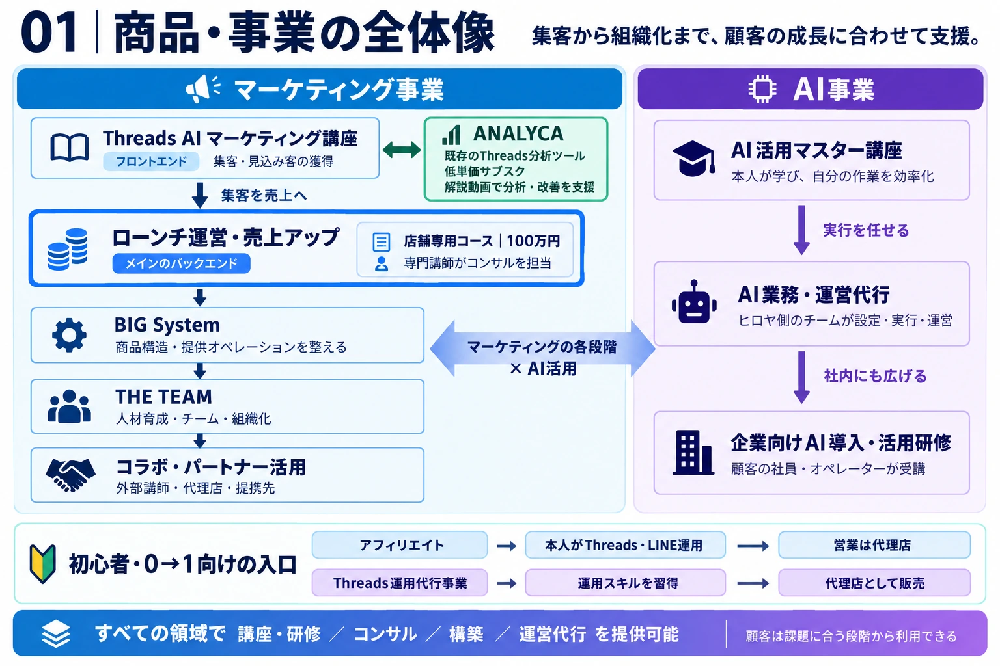
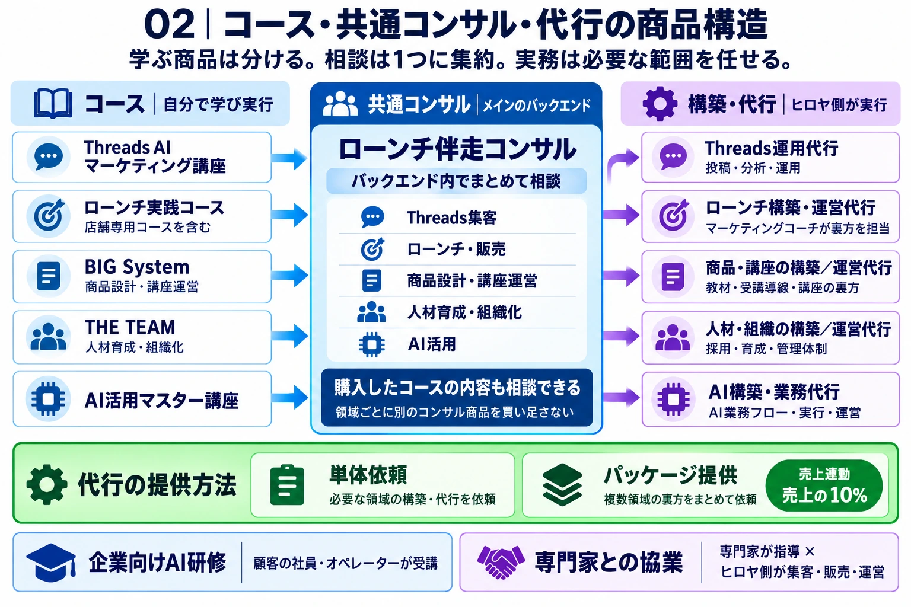

集客 → 販売 → 運営 → 組織化
Threads AI マーケティング講座がフロントエンド。ローンチ運営・売上アップをメインのバックエンドとし、商品構造、人材育成、外部連携へ接続する。
事業構想と実行計画
Threadsで集客し、ローンチで売上をつくり、商品提供と組織を整える。その各段階を、講座・共通コンサル・構築・運営代行で支える。AIの活用と専門家との協業を組み合わせて広げる事業構想。
主軸はマーケティングによる売上拡大。AI事業は、本人の作業効率化から、実務の代行、社員・チームへの導入までを担う。顧客は現在の課題に合う段階から利用できる。

この図は事業領域のつながりを示すもの。コンサルの提供方法は、次の「共通バックエンドに集約」が最新方針。
Threads AI マーケティング講座がフロントエンド。ローンチ運営・売上アップをメインのバックエンドとし、商品構造、人材育成、外部連携へ接続する。
本人が受講するAI活用マスター講座、ヒロヤ側が実務を担うAI業務・運営代行、顧客の社員が受ける導入・活用研修を、それぞれ別商品として提供する。
既存のThreads分析ツールの低単価サブスク。講座と相互に接続し、分析方法の解説動画などで利用定着と継続を支える。
各コースで自分の実行力を高め、ローンチ伴走の共通コンサルで相談・改善を続ける。規模が大きくなったら、必要な構築・代行へ進む。領域ごとに別々のコンサル商品は設けない。

Threads、ローンチ、商品・講座運営、人材・組織化、AI活用。学ぶテーマごとに商品を用意する。
購入した他コースの内容も相談できる共通の伴走先。ローンチ・販売を軸に、顧客の事業全体の改善を支える。継続課金での提供を想定する。
相談への回答に加え、仕組みの構築や日々の運営も商品化する。代行は全領域で用意し、単体・パッケージで提供する。
コース購入だけで共通コンサルが自動付帯するという意味ではない。加入条件・料金・相談回数・対応範囲は、提供開始までに確定する。
下の一覧は横にスクロールできます。
| 領域 | コース・商品 | 共通コンサルでの相談 | 構築・代行 |
|---|---|---|---|
| Threads集客 | Threads AI マーケティング講座フロントエンド | 投稿・分析・集客導線の改善 | 運用体制の構築／Threads運用代行 |
| ローンチ・販売 | ローンチ実践コース店舗専用コース：100万円の構想 | 企画・販売戦略・数字の改善 | LINE・販売導線の構築／マーケティングコーチによる裏方運営 |
| 商品・講座運営 | BIG System商品構造の仕組み | 商品設計・提供方法・オペレーション | 教材・受講導線・運営体制の構築／講座の裏方代行 |
| 人材・組織化 | THE TEAM人材育成・チーム・組織化 | 任せ方・役割分担・育成・管理 | マニュアル・管理体制の構築／採用・育成・管理の実務支援 |
| AI活用 | AI活用マスター講座 | 導入対象業務・使い方・業務改善 | AI業務フローの構築／AI業務・運営代行 |
構築は「使える仕組みをつくる」、運営代行は「継続して実務を担う」。ThreadsやAIに限定せず、販売・商品提供・人材育成まで必要な範囲を引き受ける。
Threads運用代行、LINE構築、講座運営など、顧客が必要なサービスを選択する。
提供範囲・料金は個別に設計。
構築と継続運営の作業範囲を分けて決める。
複数領域の構築・運営を組み合わせ、裏方をまとめて担う提供モデル。
対象売上・担当範囲・初期構築費・最低料金の有無など、具体的な条件は未確定。単体代行がすべて一律10%という意味ではない。
10%を計算する売上の範囲、返金・キャンセル時の扱い、精算方法、顧客側の役割、初期構築と継続運営の区分、担当人数、稼働上限、1社あたりの粗利。価格だけでなく、引き受ける実務を定義する。
すでに持つ講座運営ノウハウを、他者の商品づくりと運営にも活用する。専門家は指導に集中し、ヒロヤ側が商品設計・集客・販売・裏方を担う。
店舗専用コースは、ローンチ運営・売上アップの中の業種別コース。100万円で販売し、専門講師がコンサルを担う構想。講師の選定・役割・契約条件は今後具体化する。
アフィリエイトでは本人がThreadsとLINEを運用し、営業は代理店が担当。運用代行事業ではスキルを身につけ、代理店として販売できる状態を目指す。
顧客企業の社員・オペレーターに研修を受けてもらい、社内でAIを活用できるようにする。ヒロヤ側が実行する業務代行とは、提供内容・受講者が異なる。
構想を実装する初期案は「Threads講座 → ローンチ伴走コンサル → ローンチの構築・裏方代行」。販売・提供・採算を検証し、その仕組みを他領域へ広げる。
売上、保有商品、集客状況から、誰を支援すると成果につながるかを定義する。
やること、顧客がやること、対象外を決める。相談と制作・運営を分ける。
単価、継続課金、対象売上、1社あたりの工数・人件費・粗利を設計する。
どの顧客に、どのタイミングで、共通コンサルや代行を提案するかを決める。
マーケティングコーチなどが状況判断、施策決定、指示、品質確認を担う体制をつくる。
申込、契約、決済、情報収集、初回面談、進行管理、成果報告の手順を整える。
コンサル加入率・継続率、代行移行率、顧客成果、提供工数、1社あたりの粗利を見る。
相談対象は購入済みコースも含める。面談回数、質問方法、返信担当、対応範囲を確定する。
ヒロヤが毎回説明・判断・作業しなくても、売れて、成果を出して、利益が残る。
この実行順序とチェック項目は、構想を具体化するための提案。担当者、開始日、販売条件、成果の実証はこれから確定・検証する。